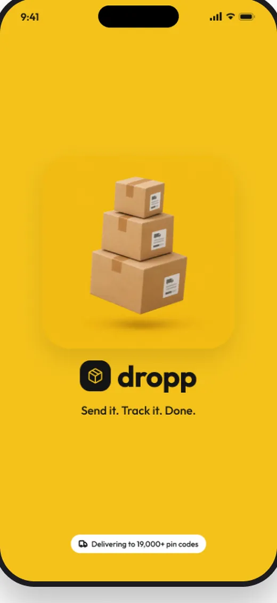
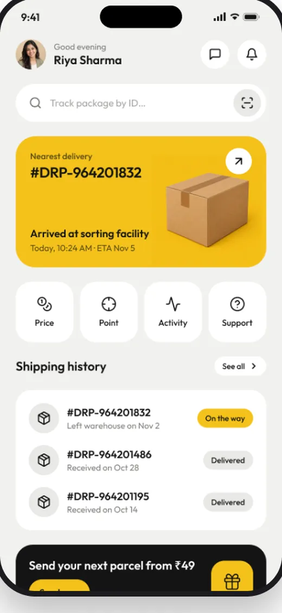
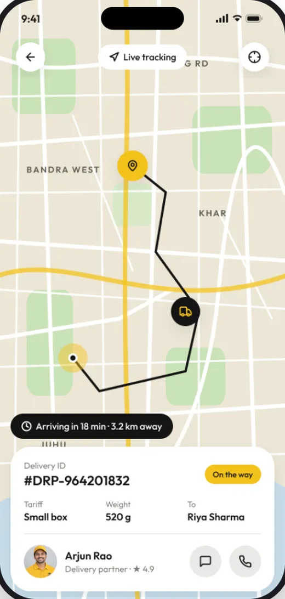
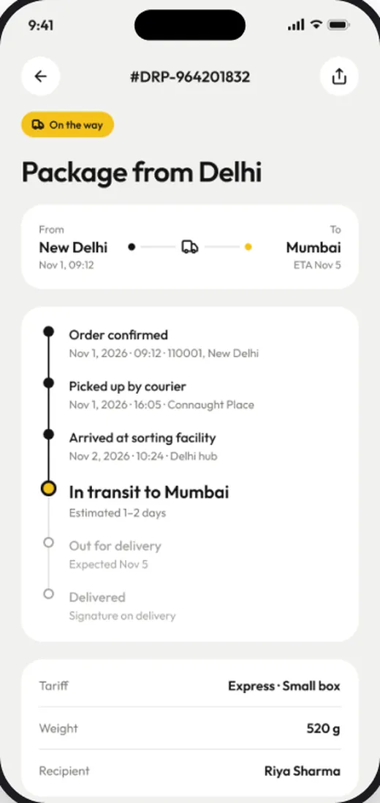

DROPPParcel delivery app
Send it. Track it. Done. - Parcel delivery app UI/UX case study
A parcel delivery app where the answer to "where is my package?" is always one glance away.



01Overview
A parcel delivery app where the answer to "where is my package?" is always one glance away.
DROPP is a parcel delivery app for India that lets people send packages, follow them live on a map and see every step from pickup to doorstep. I designed the mobile experience: a bright splash, a home screen built around the nearest delivery, live courier tracking and a full delivery timeline.
02The challenge
What had to be solved
Delivery apps fail when people have to dig for the one thing they care about: where the parcel is right now. Status codes, scattered order lists and hidden courier contact details make every check-in stressful.
Design goals
- Put the nearest delivery and its status on the home screen
- Make live tracking readable at a glance
- Explain every stage of the journey in plain words
- Keep the courier one tap away
03Process
How I approached it
- Status firstThe home screen leads with the nearest delivery card: ID, status and expected arrival.
- Map plus cardLive tracking pairs a simple route map with a bottom card for courier, weight and ETA.
- Readable timelineDelivery details show every stage with time, place and what happens next.
- Warm, bright systemSignal yellow, soft grey cards and 3D parcel illustrations give the brand energy.
04Splash and brand
A brand you can spot in a second.
A yellow splash with a stacked-parcel illustration, the DROPP wordmark and the promise "Send it. Track it. Done." sets the tone before the app opens.
05Home
The nearest delivery leads.
A greeting, a search-by-ID field and a large yellow card for the nearest delivery come first, followed by quick actions for price, pickup point, activity and support, and the shipping history.
06Live tracking
See the courier, not a status code.
The route map shows pickup, courier and destination with an "arriving in 18 min" chip. The card below holds the delivery ID, tariff, weight, recipient and buttons to message or call the courier.
07Delivery details
Every stage, explained.
From New Delhi to Mumbai, the timeline marks order confirmed, picked up, at sorting facility, in transit, out for delivery and delivered, with the current stage highlighted.

08All screens
One flow from splash to doorstep.
Together the four screens cover the journey most users repeat every week: open, check, track, done.
09Decisions
Key design decisions
The one delivery that matters right now gets the brand colour, everything else stays neutral.
"Arriving in 18 min" floats on the map so the answer is visible without scrolling.
Message and call sit next to the courier name, not in a separate support page.
10Design system
Visual language
Signal yellow with near-black text, soft grey cards, rounded 16px corners, a friendly grotesk typeface and 3D parcel illustrations for empty and brand moments.
TypeFriendly grotesk, bold numbers
11Outcome
What was delivered
DROPP gets a delivery app where the status of any parcel is visible in one glance and one tap: a bright, recognisable brand and four screens that cover the full send-and-track journey.
If the project continues, next I would:
- Design the send-a-parcel booking flow
- Add delivery notifications and proof of delivery
- Create a business dashboard for bulk shipments
Next project
VEKTARun without gravity.View project